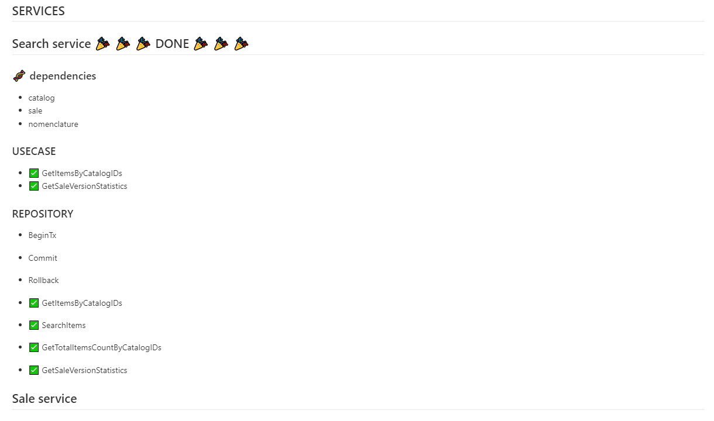
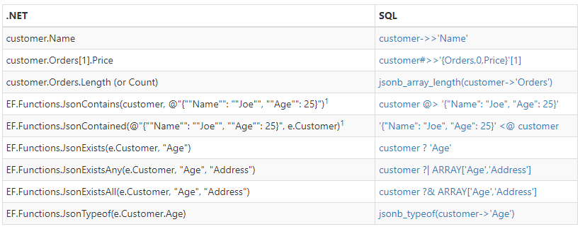

From GO MicroServices
to C# All in one

About me
Vincent Bourdon
Lead dev of SMAC team
Dev .NET since 2001
What is SMAC app ?
- Backoffice APP to manage merchandising on sale
- Frontend done using React / Typescript
- Backend done Go microservices using GRPC and Kafka
Plan
- Why ?
- How ?
- Architecture changes
- Code changes
- GraphQL
- Data Access Layer
- Api Client
- Notification System
- Conclusion
Why ?
CHANGE SOMETHING THAT WORKS
-
The app is coded in Golang
-
But all the original team members are gone
-
We tried to hire new Go developers
Guess what !
no candidate in 9 months !
Then I took the decision to migrate all the code to C#
I’m so much better dev in .NET
Veepee has a lot of good .NET dev who can ask for mobility
The RISK
of migration is less than having nobody to maintain and make evolution on the code
HOW ?
Fresh new team and 3 months
The Dev Team
Onur
The Junior
“I have a question”
Eduardo
The Senior
“It makes sense”
Vincent
The Lead
“I’m pretty sure”
Current state ?
The go code is not bad and we should be able to recode 1 for 1.
Where to start ?
Bottom / up or Top / down ?
By microservice ? 🤔
We plan to do it by service in bottom /up way.
But we discovered a big mess of services dependencies
Spaghetti
Oriented
Architecture
After few time we have started everything and finished nothing.
So I created a markdown file listing all functions to port.

How we test ?
GraphQL as a contract
Frontend as test interface.
We added some tests : unit and integration and E2E
And we already have automated test (UI and API tests)
from Quality Assurance
Thank Christopher 💘
Architecture changes
Make it Simple as stupid
- no more microservices 😮
- no more GRPC 🤨
- no more kafka (for internal notification) 😶
- Embeded frontend
All in one !
Some calls this “monolith”, I call this application
Less Waste
Each service must be Resilient and have high availability.
So we deploy on two Data Center at least twice
➡️ 4 pods by micro-service ( 9 services )
Then need load balancing, configuration, monitoring, alerting, logging …
C2 model

Code Changes
 to
to
What about typing ?
Avoid primitive obsession
So many string everywhere 🥵
use string
// Usecase represents the sale's usecase interface
type Usecase interface {
CheckRules(ctx context.Context, saleVersionID string, checkTypes []model.CheckRuleType) ([]*model.CheckRule, error)
CreateSale(ctx context.Context, sale *model.Sale) (*model.Sale, error)
CreateSaleVersion(ctx context.Context, saleID, name, fromVersionID string, isPublish bool) (*model.Version, error)
GetSale(ctx context.Context, id string) (*model.Sale, error)
GetSaleByVersionID(ctx context.Context, versionID string) (*model.Sale, error)
UpdateSale(ctx context.Context, sale *model.Sale) error
PublishSaleVersion(ctx context.Context, versionID string) (bool, error)
ResetSaleVersion(ctx context.Context, versionID string, scopes []model.ResetScope) (*model.Version, error)
NotifyIfSaleReady(ctx context.Context, versionID string) error
HandleCampaignDateChanges(ctx context.Context, campaignCode string, channels []common_kafka.CampaignChannel) error
}
In GO we can use https://github.com/google/uuid
got Guid
public interface ISaleUsecase
{
Task<CheckRule[]> CheckRules(Guid saleVersionID, CheckRuleType[] checkTypes);
Task<Models.Sale> CreateSale(Models.Sale sale);
Task<DomainVersion> CreateSaleVersion(string saleID, string name, Guid? fromVersionId, bool isPublish);
Task<Models.Sale?> GetSale(string saleID);
Task<Models.Sale[]?> GetSales(string[] saleIDs);
Task<Models.Sale?> GetSaleByVersionId(Guid versionId);
Task<int> UpdateSale(Models.Sale sale);
Task<DomainVersion> ResetSaleVersion(Guid versionID, ResetScope[] scopes);
Task PublishSaleVersion(Guid versionID);
Task NotifyIfSaleReady(Guid versionID);
Task NotifyOnSaleCreated(string id, Guid versionId, string name, string campaignCode, CountryCode countryCode);
Task HandleCampaignDateChanges(string campaignCode, Channel[] channels);
}
use more string !
languageByCountryCode = map[string][]string{
"at": {"de"},
"be": {"en", "nl", "fr"},
"ch": {"fr", "de"},
"de": {"de"},
"dk": {"da"},
"es": {"es"},
"fr": {"fr"},
"gb": {"en"},
"it": {"it"},
"lu": {"en", "fr"},
"nl": {"en", "nl"},
"pl": {"pl"},
}
got Enum
ENUM with JsonStringEnumConverter 💖
/// List of handled language
public enum Languages { da, de, en, es, fr, it, nl, pl }
/// List of handled countries
public enum CountryCode { AT, BE, CH, DE, DK, ES, FR, GB, IT, LU, NL, PL }
public static readonly IDictionary<Languages, string> CultureByLanguage =
new Dictionary<Languages, string>
{
{ Languages.da, "da-DK" },
{ Languages.de, "de-DE" },
{ Languages.en, "en-GB" },
{ Languages.es, "es-ES" },
{ Languages.fr, "fr-FR" },
{ Languages.it, "it-IT" },
{ Languages.nl, "nl-NL" },
{ Languages.pl, "pl-PL" }
};
got cultureinfo
But we don’t use it anymore for this usecase
use interface{}
jsonStruct := struct {
Code string `json:"code"`
Name string `json:"name"`
NameTranslations map[string]string `json:"translations"`
Value interface{} `json:"value"` // can be any thing. Really ?
ValueCode string `json:"valueCode"`
Properties []*Property `json:"properties"`
}{}
use generic
public record Property(
string Code,
string Name,
I18nString NameTranslations,
string? Value,
I18nString? ValueTranslations,
string ValueCode,
bool AllowMultiplicity,
Property[] Properties
);
public class I18NObject<T>{}
public class I18nString : I18NObject<string>{}
Yes, GO has this now…
use map with empty value 🤐
distinctMediaIDs := make(map[string]struct{})
//....
distinctMediaIDs[m.ID] = struct{}{}
use HashSet
HashSet<string> distinctMediaIDs = new();
//....
distinctMediaIDs.Add(m.Id);
loop for ever
use for loop everywhere
func (uc *usecase) GetDistinctNGPCodesFromArticles(ctx context.Context, articles []*model.Article) []string {
distinctNGPCodes := make(map[string]struct{}) // <-- struct {} ???
for _, aa := range articles {
distinctNGPCodes[aa.NgpCode] = struct{}{} // <-- WHAT ??
}
// Slice of NGP codes
ngpCodes := []string{}
for ngpCode := range distinctNGPCodes { // <-- one more loop
ngpCodes = append(ngpCodes, ngpCode)
}
return ngpCodes
}
got linq
public string[] GetDistinctNGPCodesFromArticles(Models.Article[] articles) =>
articles
.Select(x => x.NgpCode)
.Distinct()
.ToArray();
LINQ in go => https://godoc.org/github.com/ahmetb/go-linq
use Tuple
func (uc *usecase) GetLocalizedTemplates(/*..*/)
(map[string][]*model.TemplateSection, map[string][]*model.TemplateSection, error)
{}
got named tuple !
(Dictionary<string, TemplateSection[]> sizeLabelTemplates,
Dictionary<string, TemplateSection[]> nameTemplates) =
await _ngpSettingsUsecase.GetLocalizedTemplates(aggregationNgpCodes, countryCode);
got Expression body
Easy to reduce code to one line
public Task<IEnumerable<Models.Sale>> GetAllSalesAsync() => QueryAllAsync<Models.Sale>();
Async
Concurrent
Parallel
🤔
Is Go routine really easy ?
not so sure in long term.
goroutine for paralism
pc := make(chan *Pair, len(inputs))
// Generate identifier for each input
for k, i := range inputs {
// One goroutine per input in order to speed it up
go func(key string, meta map[string]string, isRandom bool) {
identifier, err := uc.generateIdentifier(ctx, meta, isRandom)
if err != nil {
ec <- err
return
}
pc <- &Pair{
Key: key,
Value: identifier,
}
}(k, i.GetMeta(), i.GetIsRandom())
}
use Task and TPL
// System.Threading.Tasks.Parallel
Parallel.ForEachAsync(inputs, async (k, i) => { .... });
// PLINQ
inputs.AsParallel().Select(x => {....} );
// or create list of task and wait
await Task.WhenAll(tasks);
use Task for all I/O
// DATABASE
public interface ISaleRepository
{
Task<string> CreateSaleAsync(Models.Sale sale);
Task<Models.Sale?> FindSaleAsync(Expression<Func<Models.Sale, bool>> where);
}
// WEB CLIENT
public interface IPimClient
{
Task<Product[]?> GetProductsByOperationCodeAsync(string operationCode, string language);
Task<Article[]?> GetArticlesAsync(string[] articleIDs);
Task<Article[]> BulkGetArticlesAsync(Guid[] articleIDs, bool withTranslations);
}
Lines of code
| Language | Lines of code |
|---|---|
| C# | |
| C# | 20 079 |
| Go | 133 768 |
We saved 113 689 LOC
*test included
What do we use ?
Libraries, nuget …
GraphQL
We should HotChocolate
- Very performent
- Easy to use
- Annotation-based / Code-first / Schema-first
- Subscription with WebSocket
- Awesome with EF core
- Banana cupcake
Data Access Layer
We use a ORM : RepoDB
- Performant
- easy to use
- Work on many DBMS
- A lot of feature (Bulk/Batch/Caching)

I also think about using EF core
Cause it is more flexible and have great feature on PG jsonb

API client
We use Refit
- automatic type-safe REST library
(Heavily inspired by Square’s Retrofit library)
public record TechnicalSheetsByFamily(int FamilyId, string Ft, string Subject);
public interface ISpotApi
{
[Get("/api/v2/campaigns/events/{site}/technicalSheets/{familyId}")]
Task<ApiResponse<TechnicalSheetsByFamily[]>>GetTechnicalSheetsByFamilyIdAndSite(string site, int familyId);
}
// Program.cs
builder.Services.AddRefitClient<ISpotApi>(refitSettings).ConfigureHttpClient(c=>
{
c.BaseAddress = new Uri(configuration.GetValue<string>("Spot:Host"));
c.DefaultRequestHeaders.Add("apikey", configuration.GetValue<string>("Spot:Apikey"));
});
Refit
- Only defined interface
- Use Source Generator
- Use Httpclient
- Easy to configure, add headers and bearer
Notification System
We replace Kafka by MediatR
- In-process messaging with no dependencies.
- Use generics
- Very easy to migrate using same message
MediatR
public class SaleVersionCreatedHandler : INotificationHandler<SaleVersionCreated>
{
private readonly ICatalogUsecase _catalogUsecase;
public SaleVersionCreatedHandler(ICatalogUsecase catalogUsecase) =>
_catalogUsecase = catalogUsecase;
public Task Handle(SaleVersionCreated notification, ct cancellationToken) =>
_catalogUsecase.CloneCatalogTree(
notification.VersionId,
notification.FromVersionId,
notification.IsPublish);
}
Conclusion
- it’s possible
- It take times ! 3 months here
- We know better the code and how SMAC is working
- Evolution and support should be easier now
What’s next
- we still need to do a lot of clean code
- Create a strong Domain model without dependency
- Continue to use more (domain)Events
yes it’s clean architeture 😜